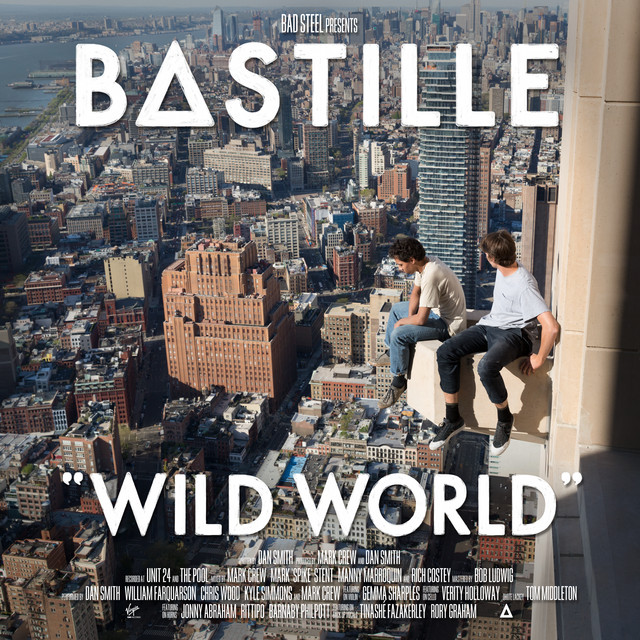
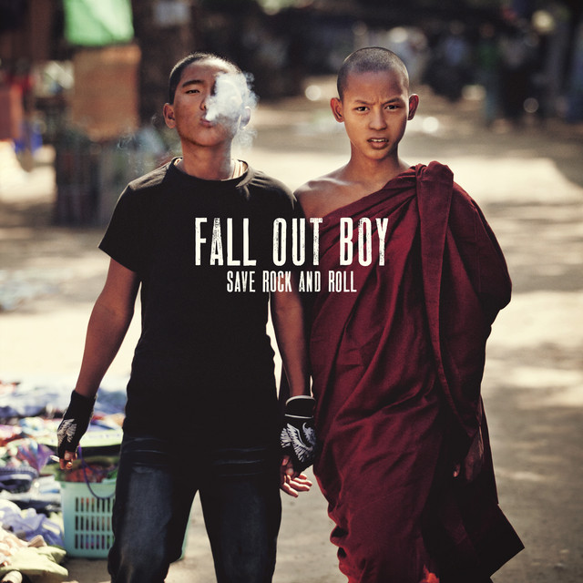
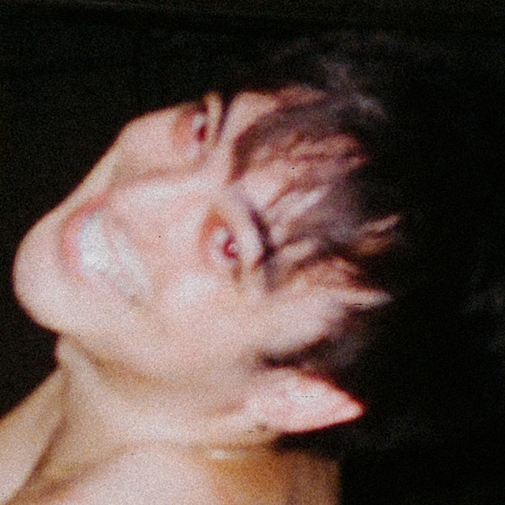
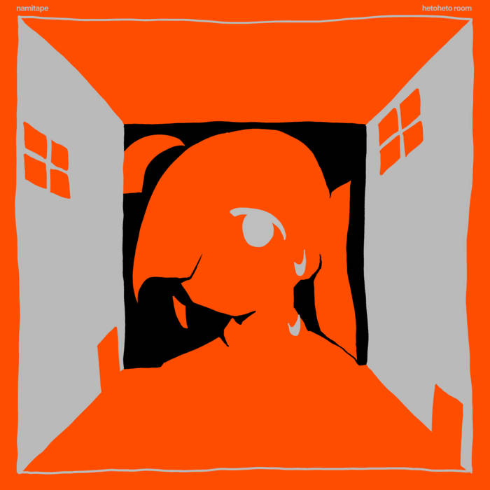

Albums I Love to Death
This is a small collection of albums that mean a lot to me, whether it's the sound, the memories attached to them, or just how many times I've had them on repeat! Each one represents a different mood or era for me :]

City Club
Album | 2014 | The Growlers | Beach Goth
This album, and the artist themselves, was introduced to me by my older sister in highschool. It means a lot to me since we don't talk as much anymore, though we are still close! It just holds a special place in my heart because it reminds me of those simpler times.

Wild World
Album | 2016 | Bastille | Alternative/Indie Pop
I absolutely love this album for how it tackles themes of the overwhelming weight of the modern world, the anxiety surrounding global issues, and the search for human connection in the chaos of it all.

Save Rock and Roll
Album | 2013 | Fall Out Boy | Alternative Rock
This album holds a special place in my heart for its sort of... old-school rock sound and lyrics, that's the best way I can describe it, haha. It reminds me of my middle-school days and the carefree moments I cherished.

Dreamland
Album | 2020 | Glass Animals | Indie Pop
Some of my first online friendships were formed around this album due to them introducing it to me! It was a heavy repeater for me, especially in the context of the pandemic and the isolation that came with it, it was one of those albums that served as a comforting companion during those times.

BALLADS 1
Album | 2018 | Joji | R&B/Alternative
As corny as it sounds, this specific album came out around the time of my first heartbreak, and it quickly became the album that helped me process my "middle-finger" thoughts towards my ex. It was a strangely cathartic experience, and I still listen to it when I need to feel like I gotta chill out and not take life too seriously.

Hetoheto Room
Album | 2026 | Namitape | Vocal Synth/Synthwave
This is the most recent album on this list but I still love it since it represents a new era, or should I say genre, of music that I only started really listening to this year! I listened to Vocal Synth music very occasionally before this year, but this artist, along with some others, really had me deep dive into the genre.